第三章 游戏操作方法
3.3 创建农民并获取资源

当拥有住所后，就可以开始创建农民。选中住宿，在游戏界面左下方会出现住所的操作栏。一般来说，住所都只有一级操作菜单，一级操作菜单第一个图标往往就是创建农民的图标（如图）。
将鼠标移到农民的图标上，会显示农民的价格。左键点击图标，即可创建一个农民。按住键盘上的 Shift 键，再点击农民图标，可以一次创建5个农民，按住键盘上的 Ctrl 键，再点击农民图标，可以无限制不停的创建农民，当资源不足时，无限创建会停止，需要重新点击再次开始。创建开始后，图标下面的白色横条代表生成的进度。
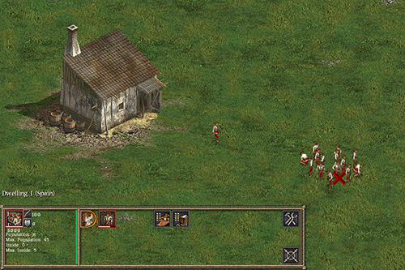
获取食物
收割粮食
大多数国家的食物来源是收割农田中长出的庄稼（苏族除外）。要种植庄稼，必须先建造一个农场，围绕着农场的土地会自动播种长出农作物。欧洲国家的农场会种植小麦，美洲原住民国家会种植玉米。
当粮食生长成熟后，就可以收割了，选中农民后，将鼠标移到成熟的农作物上，鼠标会变成镰刀图案，右键单击即可指派农民去收割。农民收割后会将食物送到农场中储存。
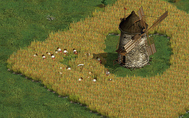
捕鱼
美洲原住民国家可以通过捕鱼来获取食物，需要先建一个造船厂，然后在造船厂内创建捕鱼小舟。捕鱼小舟会随机游走自动捕鱼，直到存储满后，会回到造船厂周边将食物卸载。升级捕鱼小舟的容量可以增加捕鱼效率。
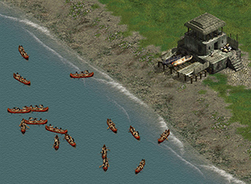
打猎
美国、英国、法国、荷兰和苏族可以通过猎人（或海盗）来打猎获取食物。如果想打猎，需先建造猎人小屋或猎人帐篷（法国住宿I里可以直接创建海盗，荷兰需要在住宿I升级猎人小屋后即可创建猎人）。通过猎人攻击野生动物，或采集野生动物的尸体，即可获得食物。猎人采集到食物后，会将食物保存到猎人小屋或仓库中。
要注意，一些大型野生动物攻击能力较强，杀死他们可能要同时出动多个猎人。
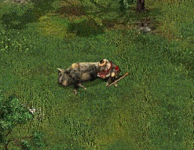
获取木材
砍伐树木
木材是建造建筑和一些军事单位必不可少的资源。可以指派农民从树林中伐木来获取木材。要收集木材，需要建造一个仓库。
选中农民后，将鼠标移到树木上，鼠标会变成斧头锯子图案，右键单击即可指派农民去砍伐。
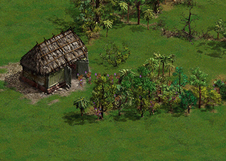
获取矿物
欧洲国家和玛雅、印加、阿兹特克、普韦布洛都可以建造矿井来获取石头、黄金、铁和煤这四种资源。在一般的游戏地图中，这四种矿会分布在初始位置的周边。通过农民在矿上建造矿井，然后将农民指派到矿井内工作，即可提取这些矿井资源。其他不能建造矿井的美洲原住民国家，可以通过贸易来获取资源，详见
3.6 贸易体系 章节。
| 金矿 |
石矿 |
铁矿 |
煤矿 |
 |
 |
 |
 |
| 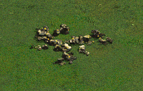 |
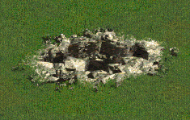 |
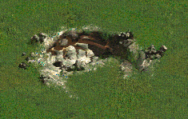 |
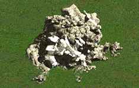 |
 |
 |
 |
 |
建造矿井
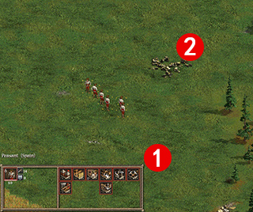
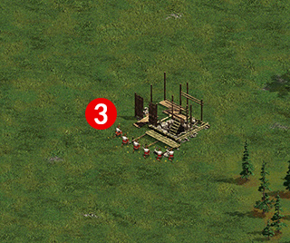
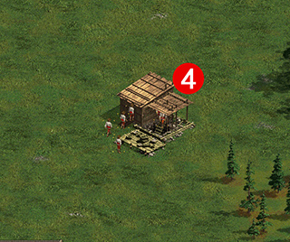
① 这是一个黄金矿；
② 在农民操作栏中选择矿井，游戏会自动提示矿井可以建造的位置，将虚拟的矿井移到金矿上，左键单击即可开始建造；
③ 建造矿井；
④ 金矿建好后，会有5个农民自动进入矿井中工作。
矿井中的资源数量是无限的。矿井中的农民数量越多，获取资源的速度就越快。用过扩大矿山升级来增加矿井中可工作的矿工的数量，升级后，需要将农民送入矿山内。
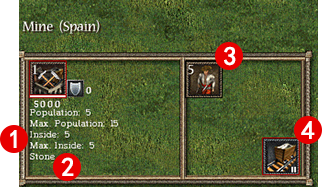
矿井操作栏
① 显示矿井内人口数和可进入的最大人口数量；
② 显示矿井的种类；
③ 矿井内的单位种类及数量，点击可以将农民撤出；
④ 扩大矿井升级，升级后可以增加更多矿井内工作的农民。
保持经济发展
一旦资源达到可以维持一支军队的时候，即可探索与征服周边。但是不要忘记继续发展经济。人口增长，需要更多的食物，维持人口，也需要消耗食物。食物不足时候，自己的士兵会饿死。可以通过相关升级和指派更多的农民去收割来增加食物产量。
木材和石头主要用于建造建筑。有更多的建筑，才能有更多的人口上限。同一种建筑的建造成本是不断增加的。所以，永远不要停止砍伐木材和获取石头。
铁和煤是火枪火炮开枪消耗的主要资源，原住民的弓箭手射箭时也要消耗石头和木材。维持士兵也需要黄金，想要支持一个数量巨大的军队，就需要大量的物资。虽然地图上的矿井资源是永远不会枯竭的，但是军队规模会受到矿井产能的限制，请记得升级自己的矿井。要对抗战斗减员，最好永远不停的创建农民，并直接将住所的集结点设定到堡垒或兵营中。
如果你操作的是易落魁、苏族、休伦这些北美部落民族，则无法修建矿井，只能从贸易站中换取黄金、石头、铁和煤。
欧洲国家和玛雅、印加、阿兹特克这些国家的农民和矿井，是会被敌人俘虏的。若农民、矿井的周边没有己方的军事单位，则敌军军事单位靠近时，就会“俘虏”他们，直接将农民或矿井的颜色变为敌军的，并且开始受敌军控制，为其所用。请务必记得在工作的农民和矿井附近驻守一些士兵。
在战斗中的农民
在危急时刻，农民也是可以派上战场战斗的。无论是保护自己的建筑或杀敌。虽然农民的攻击力不高，但在人多的情况下，也能起到一些作用。因为农民可以被俘虏，注意让自己的军队保护农民。当建筑物中没有己方人员时，也可以紧急将农民派驻。在战斗中，农民也可以用于修理建筑。